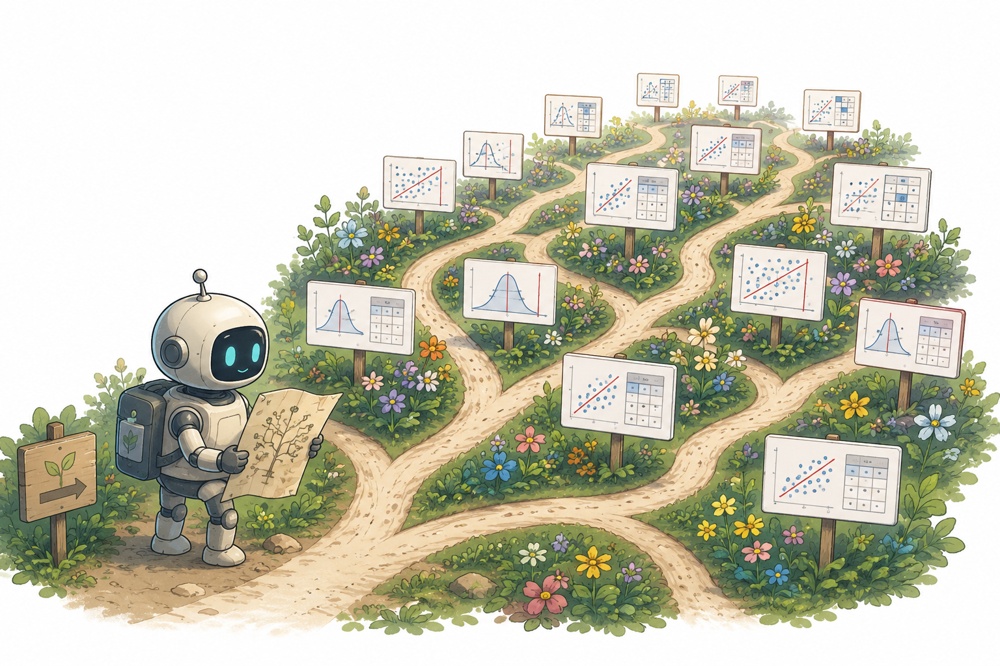
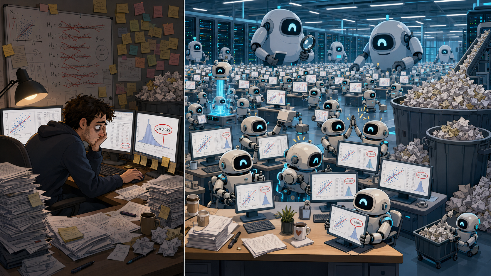
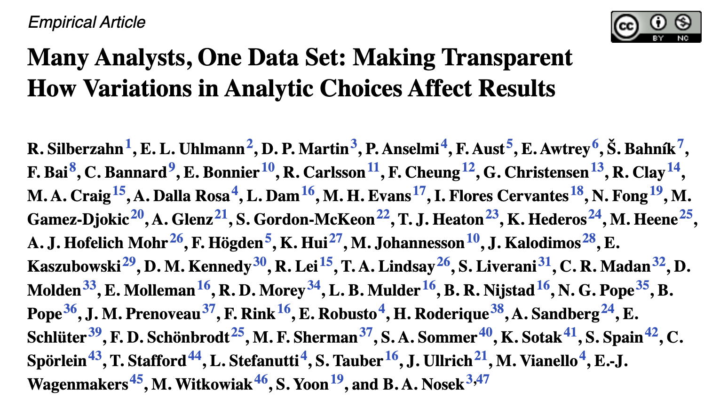
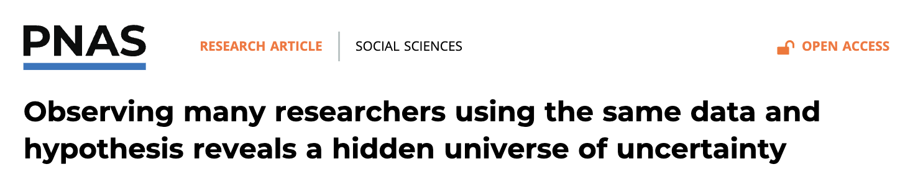
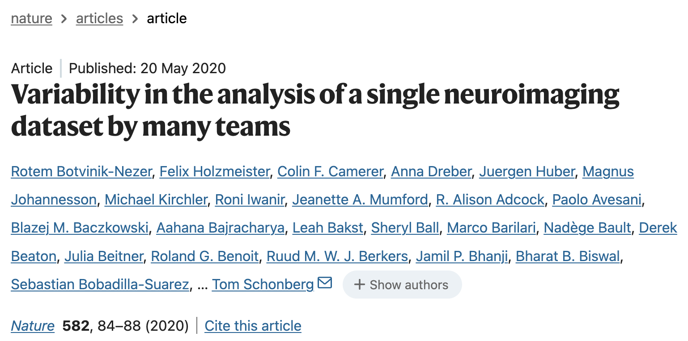
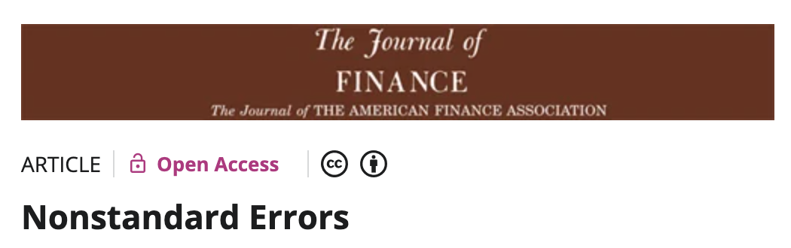

Specification Curve
Primary estimand: xy-standardized OLS coefficient for z(TV national news) predicting ideological misalignment
M = |z(symbolic ideology) − z(policy index)|.


Many AI Analysts, One Dataset:
Navigating the Agentic Data Science Multiverse
Martin Bertran, Riccardo Fogliato, Z. S. Wu
PNAS





All agent personas start from this base prompt, then apply modifications…
P-values from all analyses sorted in ascending order.
P-values from compliant analyses sorted in ascending order.
Agents make a multiplicity of defensible interpretations cheap to produce.
The open problem: how to reason, report, and decide under multiplicity, in every field where agents can interpret.
Many AI Analysts, One Dataset:
Navigating the Agentic Data Science Multiverse
Martin Bertran, Riccardo Fogliato, Z. S. Wu
PNAS
These slides: zstevenwu.com/talks/agentic-era